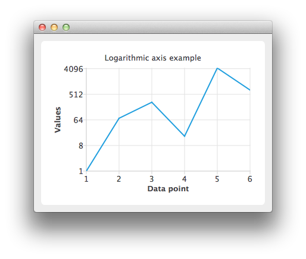

Using Logarithmic Value Axes
Note: This is part of the Charts with Widgets Gallery example.

Create a QLineSeries instance and add some data to it.
auto series = new QLineSeries; *series << QPointF(1.0, 1.0) << QPointF(2.0, 73.0) << QPointF(3.0, 268.0) << QPointF(4.0, 17.0) << QPointF(5.0, 4325.0) << QPointF(6.0, 723.0);
To present the data on the chart we need a QChart instance. Add the series to it, hide the legend and set the title of the chart.
auto chart = new QChart; chart->addSeries(series); chart->legend()->hide(); chart->setTitle("Logarithmic Axis");
Create the axes. Add them to the chart and attach to the series.
auto axisX = new QValueAxis; axisX->setTitleText("Data point"); axisX->setLabelFormat("%i"); axisX->setTickCount(series->count()); chart->addAxis(axisX, Qt::AlignBottom); series->attachAxis(axisX); auto axisY = new QLogValueAxis; axisY->setTitleText("Values"); axisY->setLabelFormat("%g"); axisY->setBase(8.0); axisY->setMinorTickCount(-1); chart->addAxis(axisY, Qt::AlignLeft); series->attachAxis(axisY);
Then create a QChartView object with QChart as a parameter.
createDefaultChartView(chart);
The chart is ready to be shown.